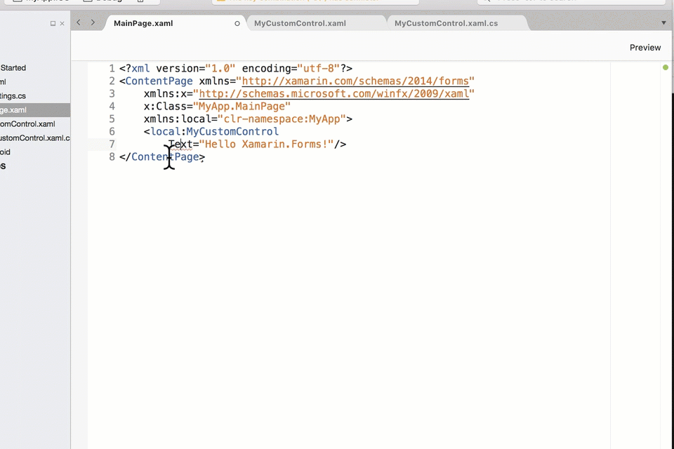
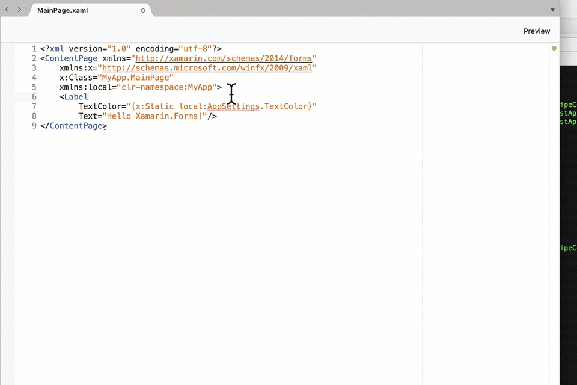
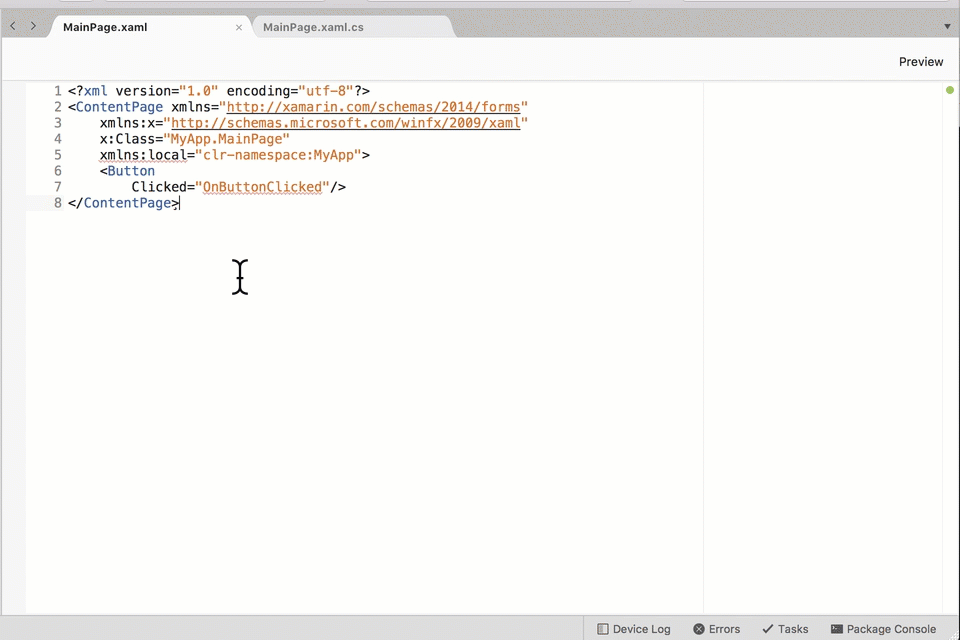

Autogenerated by MFractor v3.2.0
Add Missing Target Type Attribute
Configuration Id: com.mfractor.code_fixes.xaml.style_is_missing_target_type
Fixes Code Issue: Style Is Missing TargetType
When a style is missing a TargetType attribute or property setter node, this fix will insert an empty target type attribute.
Auto-Correct Event Handler Name
Configuration Id: com.mfractor.code_fixes.xaml.autocorrect_event_handler
Fixes Code Issue: Event Handler Exists In Code Behind Class
Auto-corrects a missing event handler name with a closely named callback from the code behind class.
Uses:
Autocorrect Invalid FontSize
Configuration Id: com.mfractor.code_fixes.xaml.autocorrect_invalid_font_size
Fixes Code Issue: Invalid Named Font Size
When a developer accidentally mispells a named FontSize value, this fix will auto-correct it to a valid font size name.
Autocorrect Nearly Named Property Binding
Configuration Id: com.mfractor.code_fixes.xaml.autcorrect_property_binding
Fixes Code Issue: Binding Expressions Resolve
Autocorrect Symbol In Markup Expression
Configuration Id: com.mfractor.code_fixes.xaml.autocorrect_csharp_symbol
Fixes Code Issue: Unresolved .NET Symbols Within Xaml Expression
When a .NET symbol referenced inside a XAML markup extension does not exist but a closely named symbol can be found within the current solution, this code fix will replace the bad symbol reference with a reference the closely named symbol.
This code fix works on both class references and property references.
Create Missing Property For Class
Configuration Id: com.mfractor.code_fixes.xaml.generate_property
Fixes Code Issue: Referenced Attribute Member Exists In Parent Type
This fix let's you create a public property onto a writable class referenced in your XAML.
For this fix to activate, the following conditions must be fulfilled:
- The attribute used on a XAML node does not exist on the .NET class for that node.
- The class referenced by the XAML node is within the users source code.
Consider the following code example:
MyCustomControl.cs
public class MyCustomControl : Xamarin.Forms.View
{
}
MyPage.xaml
<ContentPage xmlns="http://xamarin.com/schemas/2014/forms"
xmlns:x="http://schemas.microsoft.com/winfx/2009/xaml"
x:Class="MyApp.MainPage">
<MyCustomControl OnTappedMessage="The custom control was tapped!"/>
</ContentPage>
The attribute OnTappedMessage is attempting to reference a member that does not exist inside MyCustomControl; a developer can use this code action to generate that missing member:
MyCustomControl.cs
public class MyCustomControl : Xamarin.Forms.View
{
public string OnTappedMessage { get; set; }
}
When the class derives from Xamarin.Forms.View, this code action can be used to generate a bindable property implementation:

The code action will attempt to resolve the new properties type by inspecting the value of the source attribute. If the value is an expression, MFractor will evaluate the expression and use the return type as the new properties type.
If the attributes value isn't an expression, MFractor will attempt to infer type based on the literal input. For example, an attribute value of true would trigger MFractor to output a boolean typed property. This behaviour can be disabled by configuring the TryInferUnknownTypes to false.
Configurable Properties
| Name | Type | Defaults To | Description |
|---|---|---|---|
| TryInferUnknownTypes | System.Boolean | True |
Should MFractor attempt to guess the type for the new property based on it's value? EG: A value of true would cause the output type to be bool instead of System.Object. |
| DefaultColorType | System.String | "Xamarin.Forms.Color" |
When attempting to infer the property type based on its value and MFractor decides it's a color, what is the color type MFractor should use? |
| DefaultPropertyType | System.String | "System.Object" |
What is the default type for the new property if MFractor can't figure it out based on the attribute value? |
Uses:
Create Value Converter To Resolve Type Flow
Configuration Id: com.mfractor.code_fixes.xaml.create_resolving_value_converter
Fixes Code Issue: Binding Expression Return Type Mismatch

Using the input and output type for a value conversion path, this code fix creates a new value converter implementation for the input and output type and imports it into the views resource dictionary.
Configurable Properties
| Name | Type | Defaults To | Description |
|---|---|---|---|
| DefaultConverterNamespace | System.String | "converters" |
The namespace name of the xmlns import statement for the newly created value converter |
Uses:
Create x:TypeArguments Attribute
Configuration Id: com.mfractor.code_fixes.xaml.create_type_arguments_attribute
Fixes Code Issue: Generic Usage Is Missing x:TypeArguments
Generates an x:TypeArguments attribute, resolving the potential argument types if possible.
Encapsulate Content Page Children With Grid
Configuration Id: com.mfractor.code_fixes.xaml.encapsulate_content_page_children_with_grid
Fixes Code Issue: ContentPage Has Multiple Direct Children
When a content page has multiple direct children, this fix merges them into a stacklayou.
Uses:
Encapsulate Content Page Children With StackLayout
Configuration Id: com.mfractor.code_fixes.xaml.encapsulate_content_page_children_with_stack_layout
Fixes Code Issue: ContentPage Has Multiple Direct Children
When a content page has multiple direct children, this fix merges them into a grid.
Configurable Properties
| Name | Type | Defaults To | Description |
|---|---|---|---|
| DefaultOrientation | System.String | "" |
What is the default orientation for the StackLayout that is created for this fix? If empty, an Orientation attribute is not inserted. |
Encapsulate Content View Children With Grid
Configuration Id: com.mfractor.code_fixes.xaml.encapsulate_content_view_children_with_grid
Fixes Code Issue: ContentView Has Multiple Direct Children
When a content view has multiple direct children, this fix merges them into a grid.
Uses:
Encapsulate Content View Children With StackLayout
Configuration Id: com.mfractor.code_fixes.xaml.encapsulate_content_view_children_with_stack_layout
Fixes Code Issue: ContentView Has Multiple Direct Children
When a content view has multiple direct children, this fix merges them into a stack layout.
Configurable Properties
| Name | Type | Defaults To | Description |
|---|---|---|---|
| DefaultOrientation | System.String | "" |
What is the default orientation for the StackLayout that is created for this fix? If empty, an Orientation attribute is not inserted. |
Encapsulate Scroll View Children With Grid
Configuration Id: com.mfractor.code_fixes.xaml.encapsulate_scroll_view_children_with_grid
Fixes Code Issue: ScrollView Has Multiple Direct Children
When a scroll view has multiple direct children, this fix merges them into a grid.
Uses:
Encapsulate Scroll View Children With StackLayout
Configuration Id: com.mfractor.code_fixes.xaml.encapsulate_scroll_view_children_with_stack_layout
Fixes Code Issue: ScrollView Has Multiple Direct Children
When a scroll view has multiple direct children, this fix merges them into a stack layout.
Configurable Properties
| Name | Type | Defaults To | Description |
|---|---|---|---|
| DefaultOrientation | System.String | "" |
What is the default orientation for the StackLayout that is created for this fix? If empty, an Orientation attribute is not inserted. |
Encapsulate With Resource Dictionary
Configuration Id: com.mfractor.code_fixes.xaml.encapsulate_with_resource_dictionary
Fixes Code Issue: Inner Element Is Not Resource Dictionary
When declaring the resources for a page/view, it is common to accidentally put resources directly inside a MyPage.Resources rather than wrapping the elements with a ResourceDictionary declaration.
Example:
<?xml version="1.0" encoding="utf-8"?>
<ContentPage xmlns="http://xamarin.com/schemas/2014/forms"
xmlns:x="http://schemas.microsoft.com/winfx/2009/xaml"
x:Class="HelloMFractor.HelloMFractorPage">
<ContentPage.Resources>
<x:String>Hello World!</x:String>
</ContentPage.Resources>
</ContentPage>
In the above example, the declaration <x:String>Hello World!</x:String> is declared directly inside the property setter, which will cause a type-mismatch exception at runtime.
When actioned, the Encapsulate with resource dictionary fix will wrap elements inside a resources property setter node with a resource dictionary. This would correct the above sample to:
<?xml version="1.0" encoding="utf-8"?>
<ContentPage xmlns="http://xamarin.com/schemas/2014/forms"
xmlns:x="http://schemas.microsoft.com/winfx/2009/xaml"
x:Class="HelloMFractor.HelloMFractorPage">
<ContentPage.Resources>
<ResourceDictionary>
<x:String>Hello World!</x:String>
</ResourceDictionary>
</ContentPage.Resources>
</ContentPage>
Generate .NET View From XAML Node
Configuration Id: com.mfractor.code_fixes.xaml.generate_missing_class_as_csharp_view
Fixes Code Issue: Xaml Node Resolves
When a Xaml node cannot be resolved, this fix will create a new view declared in C#.
Generate Binding Expression Property Implement
Configuration Id: com.mfractor.code_fixes.xaml.generate_binding_property
Fixes Code Issue: Binding Expressions Resolve
Uses:
Generate class
Configuration Id: com.mfractor.code_fixes.xaml.generate_csharp_class
Fixes Code Issue: Unresolved .NET Symbols Within Xaml Expression
When a c# symbol reference expression does not resolve, this fix generates an implementation for the missing class.
Generate Class From XAML Node
Configuration Id: com.mfractor.code_fixes.xaml.generate_missing_class
Fixes Code Issue: Xaml Node Resolves
When a Xaml node cannot be resolved, this fix will create a new implementation of that class.
Generate Class With Static Property
Configuration Id: com.mfractor.code_fixes.xaml.generate_class_and_member
Fixes Code Issue: Unresolved .NET Symbols Within Xaml Expression

When a c# symbol referenced by an x:Static expression does not resolve, this fix generates a stub class declaration with a default, readonly static member.
Consider the following code:
MainPage.xaml
<?xml version="1.0" encoding="utf-8"?>
<ContentPage xmlns="http://xamarin.com/schemas/2014/forms"
xmlns:x="http://schemas.microsoft.com/winfx/2009/xaml"
x:Class="MyApp.MainPage"
xmlns:local="clr-namespace:MyApp">
<Label
TextColor="{x:Static local:AppSettings.TextColor}"
Text="Hello Xamarin.Forms!"/>
</ContentPage>
In the above example, the expression {x:Static local:AppSettings.TextColor} points to a class (AppSettings) and member (TextColor) that do not exist in the MyApp namespace in the current project.
Generate Event Handler
Configuration Id: com.mfractor.code_fixes.xaml.generate_event_handler
Fixes Code Issue: Event Handler Exists In Code Behind Class
When an event handler Xaml attribute references a method that does not exist on the code behind class, the Generate Missing Event Handler code fix will generate a method on the code behind class.
Consider the following code:
View: MainPage.xaml
<?xml version="1.0" encoding="utf-8"?>
<ContentPage xmlns="http://xamarin.com/schemas/2014/forms"
xmlns:x="http://schemas.microsoft.com/winfx/2009/xaml"
x:Class="MyApp.MainPage">
<Button Clicked="OnButtonClicked"/>
</ContentPage>
Code Behind: MainPage.xaml.cs
public partial class MainPage : ContentPage
{
public LoginPage()
{
InitializeComponent();
}
}
The referenced method OnButtonClicked does not exist in the views code behind class, MainPage. The corresponding analyser will detect this issue and annotate it in your source code.
From here, we can action the code fix to generate a method stub in MainPage.xaml.cs:

Uses:
Generate Missing Binding Command Stub
Configuration Id: com.mfractor.code_fixes.xaml.generate_binding_command_stub
Fixes Code Issue: Binding Expressions Resolve
When the symbol referenced inside a binding expression is unresolved, this fix can either apply an auto-correcet or generate a property on elements the BindingContext
Uses:
Generate property
Configuration Id: com.mfractor.code_fixes.xaml.generate_csharp_member
Fixes Code Issue: Unresolved .NET Symbols Within Xaml Expression
Generate a static or constant variable onto the targetted class
Generate Resource Dictionary Key
Configuration Id: com.mfractor.code_fixes.xaml.missing_resource_key
Fixes Code Issue: Resource Entry Does Not Define Key
When a Xaml node that is declared within a ResourceDictionary is missing the x:Key attribute, this fix will automatically create a new x:Key attribute for the node.
Generate Value Converter From XAML Node
Configuration Id: com.mfractor.code_fixes.xaml.generate_missing_class_as_value_converter
Fixes Code Issue: Xaml Node Resolves
When a Xaml node cannot be resolved and it ends with '[cC]onverter', this fix will create a new implemenation of IValueConverter.
Uses:
Generate XAML View From XAML Node
Configuration Id: com.mfractor.code_fixes.xaml.generate_missing_class_as_xaml_view
Fixes Code Issue: Xaml Node Resolves
When a Xaml node cannot be resolved, this fix will create a new view that uses XAML and a code-behind class.
Uses:
Import Missing Image Resource
Configuration Id: com.mfractor.code_fixes.xaml.import_missing_image_resource
Fixes Code Issue: Detect Missing Image In Linked Projects

When MFractor detects that an image provided to an ImageSource is missing in any linked Android or projects, this code fix enables you to quickly import that image into the Resources/Drawables folder of that project.
Import Namespace And Assembly For Unresolved Expression Symbol
Configuration Id: com.mfractor.code_fixes.xaml.resolve_expression_csharp_symbol
Fixes Code Issue: Unresolved Namespace Within Xaml Expression
When the namespace inside c# symbol reference expression can be resolved to a .NET symbol in the project or its references this fix generates an 'xmlns' import statement in the root xaml element.
Import Namespace And Assembly For Unresolved XAML Node
Configuration Id: com.mfractor.code_fixes.xaml.import_reference
Fixes Code Issue: Unresolved Xml Namespace

When building XAML documents, developers frequently use 3rd party or custom controls to build great UIs for their app.
This comes with one little quirk, each time a custom control is used in XAML, the .NET namespace and assembly needs to be imported as a custom XAML namespace.
For example, consider we wanted to use FFImageLoadings CachedImage control like so:
<ffimage:CachedImage/>
This control lives inside the FFImageLoading.Forms namespace in the FFImageLoading.Forms assembly. To include this control into our XAML, we need to add the following code into the root XAML node:
xmlns:ffimage="clr-namespace:FFImageLoading.Forms;assembly=FFImageLoading.Forms"
There's a few issues with this workflow:
- Remembering the
clr-namespace: ... ;assembly= ...syntax is hard! - Remembering what namespace and assembly a control is in is hard!
Therefore the Import Namespace And Assembly For Unresolved XAML Node code fix is very useful because it resolves these for you!
The code action will search all assemblies that the project references for classes that match the name of the XAML node. It will then suggest the creation of an xmlns=... import statement to resovle that missing class:
Before
<?xml version="1.0" encoding="utf-8"?>
<ContentPage xmlns="http://xamarin.com/schemas/2014/forms"
x:Class="MyXamarinFormsApp.MainPage" >
<ffimage:CachedImage/> <-- The ffimage namespace doesn't exist!
</ContentPage>
After
<?xml version="1.0" encoding="utf-8"?>
<ContentPage xmlns="http://xamarin.com/schemas/2014/forms"
x:Class="MyXamarinFormsApp.MainPage"
xmlns:ffimage="clr-namespace:FFImageLoading.Forms;assembly=FFImageLoading.Forms" > <-- The ffimage is now resolved
<ffimage:CachedImage/>
</ContentPage>
Import Value Converter For Binding Type Flow
Configuration Id: com.mfractor.code_fixes.xaml.import_resolving_value_converter
Fixes Code Issue: Binding Expression Return Type Mismatch
Inspects for IValueConverter implementations within the project and it's references that match the value conversion flow for this binding type mismatch. IValueConverter implementations must be annotated with the ValueConversionAttribute to be detected by this fix.
Remove Unused XML Namespace
Configuration Id: com.mfractor.code_fixes.xaml.xml_namespace_is_unused
Fixes Code Issue: Unused Xml Namespace
Removes the unused xmlns declaration from the root XAML element
Rename Duplicate Namespace References
Configuration Id: com.mfractor.code_fixes.xaml.multiple_namespace_assembly_references
Fixes Code Issue: Duplicate Namespace Declaration
When multiple namespaces reference the same .NET namespace and assembly, this code fix will remove duplicates by replace all occurances of a particular namespace another namespace name to make sure only one XML namespace references an assembly and namespace.
Uses:
Replace attribute with closely named member
Configuration Id: com.mfractor.code_fixes.xaml.autocorrect_member
Fixes Code Issue: Referenced Attribute Member Exists In Parent Type
Looks for members on a C# class that are named closely to an unresolved xml attribute and then suggest near matches.
Replace Field Or Method Reference With Property
Configuration Id: com.mfractor.code_fixes.xaml.binding_expression_does_not_return_property
Fixes Code Issue: Validate Binding Expressions Return A Property
Replaces a field or method symbol within a binding expression with a suggested property name.
Replace Node With Auto-Correction
Configuration Id: com.mfractor.code_fixes.xaml.autocorrect_unresolved_reference
Fixes Code Issue: Xaml Node Resolves
This fix action replaces a mispelt xaml node that can be resolved in an assembly with its correct .NET symbol name.
Replace Style Setter Property With Autocorrection
Configuration Id: com.mfractor.code_fixes.xaml.style_property_setter_does_not_exist
Fixes Code Issue: Property Setter Does Not Exist In Style TargetType
When a style setter tries to use a property that doesn't exist on the styles TargetType but the name closely matches an existing member on that type, this code fix will replace the incorrect value with a suggested correction.
Replace Unknown Property Value With Autocorrection
Configuration Id: com.mfractor.code_fixes.xaml.unknown_static_property_value
Fixes Code Issue: Unknown Static Property Value
When a xaml element property attempts to reference a static field (for instance LayoutOptions.Center), this fix finds the nearest named member and replaces the incorrect value with an auto-correction.
Replace with correct attached property name
Configuration Id: com.mfractor.code_fixes.xaml.no_attached_property
Fixes Code Issue: Class Does Not Have Attached Property
Replaces an incorrect attached property with an auto-corrected value.
Replace x:Name Reference With Autocorrection
Configuration Id: com.mfractor.code_fixes.xaml.xreference_does_not_exist
Fixes Code Issue: Referenced Code Behind Field Exists
Replaces an invalid x:Name reference with a similiarly named x:Name declared in the current document.
Replace XML Namespace With Autocorrection
Configuration Id: com.mfractor.code_fixes.xaml.xml_namespace_does_not_exist
Fixes Code Issue: Unresolved Xml Namespace
Replaces an xml namespace prefix with the auto-corrected xml namespace.